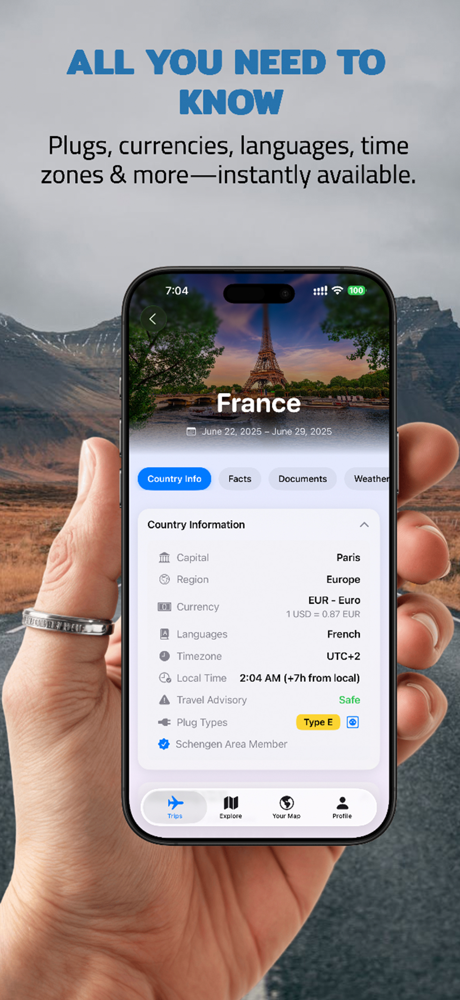

Go: TravelApp
Planifica viajes, controla pasaportes y visas, verifica requisitos de entrada y ten lo esencial del destino en un solo lugar, claro y organizado.

Todo lo que necesitas antes de partir
Guarda los datos de tu pasaporte, gestiona varias visas y recibe avisos antes de que caduquen.
Organiza viajes por destino, fechas y propósito—con ciudades, notas y detalles clave.
Comprueba automáticamente si necesitas visa según los pasaportes que tienes.
Mantente listo con listas claras para que no se te escape nada importante antes de salir.
Consulta enchufes, moneda, idioma, zona horaria y nivel de seguridad de destinos compatibles.
Hecho para viajar con calma y orden
Tus datos de viaje están encriptados y nunca se comparten. Siempre tienes el control.
Todos tus documentos, viajes y recordatorios al alcance de tu mano, en cualquier momento y lugar.
Diseñado con los mejores principios de UI de Apple para una experiencia fluida y hermosa.
Verificación de visas, información de países y herramientas de viaje para cualquier destino que sueñes.
Comienza en tres simples pasos
Descarga Go: TravelApp en el App Store y empieza a organizar tu próximo viaje.
Guarda pasaportes y visas, configura tu perfil y personaliza tus preferencias con seguridad.
Planifica viajes, verifica requisitos, completa listas y abre el cockpit del destino cuando lo necesites.
Hecho con pasión en Rogers, AR
Go: TravelApp nació de una idea simple: hacer que la planificación de viajes sea más fácil y organizada. Entendemos los desafíos de gestionar documentos, planificar viajes y cumplir plazos importantes.
Nuestra misión es dar a los viajeros un lugar claro para lo que importa—desde la planificación hasta la salida.
Descarga Go: TravelApp hoy para seguimiento de pasaporte y visa, planificación, requisitos, listas y lo esencial del destino.
Descargar en el App Store